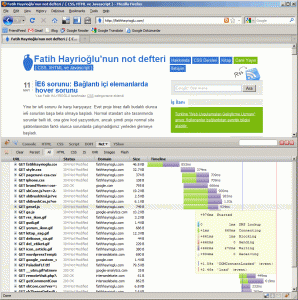
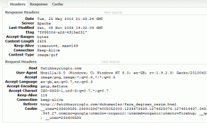
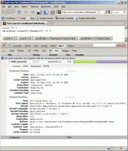

FireBug hakkında elle tutulur bir bilgi olmadığı için bu makaleyi yazmaya karar verdim. Bu yazımda FireBug Net paneli hakkında olacaktır. FireBug geliştirme ile alakalı bir makale değildir. Özellikleri hakkında genel bir bilgi içerecektir.
Web sayfalarının kodlarken bir çok yönünü düşünerek kodlarız. Erişebilirliği, esneklik, farklı tarayıcılara uyumlu olması, performans bunlardan ilk aklımıza gelenler. En önemlilerinden biri performansının iyi olmasıdır. Web sitesi sahipleri sitelerinin tarayıcılar tarafından hızlı gezilmesi için en kısa zamanda açılmasını sağlamak için uğraşır. Performans değerlendirmesi için kullanabileceğimiz araçlardan birisi Firebug'ın Net panelidir. Burada Firebug'ın Net sekmesini inceleyeceğiz. Aşağıda benim anasayfamın net panelindeki görüntüsünü görüyorsunuz.

Genel Net sekmesi görünümü
Net Panel Giriş
Net sekmesinin genel amacı kullanıcıya HTTP trafiğini kolayca göstermektir. Her satır sayfayı oluşturan bir girdinin istek/cevabını gösteren bir göstergedir.
Örnek bir sayfa ile devam edelim.
http://fatihhayrioglu.com/dokumanlar/fare_degisen_resim.html
Yukarıdaki resimde sunucuya yapılan iki isteğin sıralaması ile birlikte göstermektedir. İlk istek sayfanın kendisi, ikinci istek ise degisen_resim.gif resmi.
Her girdi istek hakkında genel bir bilgiyi gösterir. Zaman çizelgeside grafiksel olarak yüklenme zamanını gösteriyor.
Net sekmesi bize fare_degisen_resim_klavye.html içeriğinin 418ms de yüklendiğini ve degisen_resim.gifresmininde 146ms de yüklendiğini gösteriyor.
Net sekmesi bize ilk bakışta aşağıdaki bilgileri verir;
- HTTP istek metodunu (GET)
- Cevap durumu ve açıklaması (200 OK)
- İstem dosya ismini(fare_degisen_resim_klavye.html) ve fare imlecini üzerine getirirsek hangi adresten çektiğini gösterir.
- Cevapların hangi barındırma hizmetinde geldiği (fatihhayrioglu.com)
- Cevabın boyutu (778Byte)
- Grafiksel gösterge ve yüklenme zamanı (418ms)
Birde en sondaki sonuç bilgi satırı var.
- Sayfada 2 adet istek yapıldı
- Bu 2 isteğin toplam boyutu 3kb ve eğer önbellekten alıyorsa ne kadarını önbellekten alıyor bilgisi.
- Bu 2 isteğin ne kadar zamanda yüklendiği(son isteğin sonu ile ilk isteğin başı arasındaki zaman)
Her bir elemanın üzerine gelince popup ekranı ile bize daha detaylı bilgi veriyor. Her rengin bir anlamı var.
DNS Lookup: DNS çözümleme zamanı
connecting: Oluşturulan TCP bağlantısı için harcanan zaman
Blocking: Ağa bağlanırken tarayıcı bu istekleri belli bir sıraya
dizer. Bu sırada beklerken harcadığı zaman. Eğer böyle bir zaman
harcanıyorsa gösterilir, yoksa gösterilmez. Aşağıda bu konuya(Tarayıcı
Sırasında Bekleme Zamanı) biraz daha ayrıntılı değineceğiz.
Sending: Sunucuya gönderilecek veri için istek gönderme zamanı
Waiting: Sunucudan dönen cevabın bekleme zamanı(sunucudan gelen ilk
byte'ın bekleme zamanı)
Receiving: Gelen cevabın indirilmesi için gereken zaman.
DOMContenLoaded:(Mavi dikey çizgi) ilk istek başladıktan +5.48s sonra DOM içeriğinin yüklenme olayı tetiklendi, anlamını taşıyor. Eğer bu değer eksi ise DOM içeriği istek başlamadan önce gönderilmiş demektir.
load:(kırmızı dikey çizgi) Bu gösterge bize yüklenme olayının ilk istek başladıktan sonra geçen süreyi gösterir. Eksi değer alması ilk istekden önce tetiklendiğini gösterir.
Tarayıcı Sırasında Bekleme Zamanı
İsteğin sunucuya gönderilmeden önce tarayıcı sırasında beklemesi sonucu iki durum orataya çıkar. Bu durumları biraz açarsak;
- Bir web sayfasında iki adet javascript dosyası varsa bunlar aynı anda yüklenmez. İlk önce birisi yüklenir daha sonra ikincisi yüklenir. Bu nedenle mümkünse javascript dosyalarını teke indirmek bize zaman kazandıracaktır.
- Her tarayıcının aynı anda sunucudan(her bir domain için) yapacağı
istek sayısı sınırlıdır. Mesela bu sayı Firefox 3 için 6'dır. Yani
bunun anlamı eğer sunucudan yapılacak istek sayısı 6'yı geçerse,
altıncıdan sonrası ilk altının yüklenmesini beklemek durumunda
kalacaktır. Bu nedenle CSS Sprite tekniği kullanımı önemlidir.
Net Sekmesi İstek ve Cevap Detayları
Her isteğin solundaki artı(+) işaretine tıklayarak daha ayrıntılı bilgi alabiliriz. Burada önemli bir noktayı açıklayalım: request sunucuya gönderimi response geri geleni gösterir. Eğer gösterilen öğe sunucudan veya ön bellekten geliyorsa bir adet request ve response görünecektir.

Açılan alandaki sekmeler ve anlamları;
- Headers: HTTP istek ve cevapları
- Response: Sunucudan dönen veri.
- HTML: Verilen cevap HTML'in ön görünümü(sadece html ögeleri içindir.)
URL Parametreleri
Eğer sayfada kullanıcıdan veri alınmış ise Net panelinde yukarıdakine ek olarak Params sekmesi çıkar. Params sekmesinde kullanıcıdan gelen verileri görmemiz mümkündür.
http://www.softwareishard.com/firebug/introduction/net-panel/testPage1.htm?param1=value1¶m2=value2
Post ve Put İstekleri
Eğer kullanıcından HTTP üzerinden veri istenmiş ise bunun için Post isimli yeni bir sekme açılacaktır ve kullanıcının gönderdiği veriler listelenecektir.
JSON Cevapları
JSON verisi olması durumunda yeni bir sekme daha açılacaktır ve json verileri bir liste halinde sıralanacaktır.
Tarayıcı Ön Belleği
Eğer sayfa ögesi tarayıcı ön belleğinde geliyorsa Cache sekmesi belirecektir. Bu sekme bize ön bellekten gelen bilgileri ayrıntısı ile gösterecektir.
Yukarıdaki ekran görüldüğü gibi listede 304 değişmedi ibaresi olan ögeler tarayıcı ön belleğinden alınıyor demektir.
Dosya Tipine Göre Yükleme Zamanları
Bazen biz sayfadaki ögelerin her biri için yüklenme zamanını bilmek isteriz, örneğin javascript veya resimler vb. Bunun biz Net sekmesine tıklayıp sonra eskiye göre üstte yenilerde alttaki sekmelerden(javascript, images) yapabiliriz. Buda bize toplam yüklenme zamanı ve farklı dosya tiplerinin yüklenme zamanı ayrımını yapma imkanı verir.
XMLHttpRequest İzleme
Şimdiye kadar yapılan istek ve cevapları inceledik. Bununla birlikte web sayfaları asenkron istekler ve cevaplarıda içermektedir, ajax olarak tanımlanan bu istek ve cevaplarıda Net panelinden izlememiz mümkündür. Bir sayfada ajax isteği olduğu durumları Net panelindeki XHR sekmesinden izleyebilir ve bilgilerini buradan alabiliriz.
http://www.janodvarko.cz/firebug/tests/BreakOnXHR/breakOnXHR.html Örnek sayfasını incelersek

Yukarıda görüldüğü gibi ajax istek ve cevapları hakkında detaylı bilgi alıyoruz. Clear düğmesi ile isteği silebiliriz.
FireBug Net Sekmesine Yardımı İle Performans Değerlendirmesi Yapmak
Benim açımdan FireBug Firefox'un en önemli eklentisidir. Bu nedenle diğer tarayıcılara geçmem şu an itibari ile imkansız. FireBug o kadar büyük bir eklentidir ki bu eklentiye bağlı çıkarılan eklentiler vardır. Bu eklentilerden bir kaçı;
- Yahoo'bub çıkardığı YSlow
- Google'un çıkardığı Page Speed
Bu eklentileri kullanarak web sayfalarımızın performansını ölçebiliriz. Ayrıca bu eklentiler bize sitemizdeki yavaşlamaya neden olan durumları açıkça gösterir ve düzeltmemiz için önerilerde bulunur.
Kaynaklar
- http://getfirebug.com/net.html
- http://www.softwareishard.com/blog/firebug/introduction-to-firebug-net-panel/
- http://michaelsync.net/2007/10/15/firebug-tutorial-section-4-net-css-and-dom-tabs
- http://cncmachining.wordpress.com/2009/06/22/firebug-tricks/
- http://developer.yahoo.com/yslow/netpanelpatch.html
- http://www.stevesouders.com/blog/2009/11/03/firebug-net-panel-more-accurate-timing/
- http://net.tutsplus.com/tutorials/other/http-headers-for-dummies/ (http headers bilgisi)
- http://www.softwareishard.com/blog/firebug/firebug-net-panel-timings/
Yorumlar !